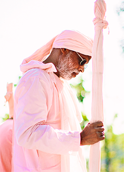
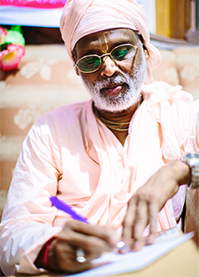

Tridaṇḍisvāmī Śrī Śrīmad Bhaktivedānta
Vana Gosvāmī Mahārāja prega há mais
de vinte anos a missão de Śrī Caitanya
Mahāprabhu por todo o mundo,
que consiste no cantar do mahā-mantra:
Hare Kṛṣṇa Hare Kṛṣṇa
Kṛṣṇa Kṛṣṇa Hare Hare
Hare Rāma Hare Rāma
Rāma Rāma Hare Hare
E a Vana Madhuryam TV distribui esse doce
néctar da imortalidade 24hrs.
Harikathā
“Hari” significa o Senhor Supremo e a palavra em
sânscrito “kathā” significa literalmente narrações
sagradas, ou seja, significa que o próprio Hari, Kṛṣṇa,
sabda brahma, o som transcendental entra em seus ouvidos.
Esses hari-kathās ministrados no Brasil por
Tridaṇḍisvāmī Śrī Śrīmad Bhaktivedānta Vana Gosvāmī Mahārāja,
abordam tópicos transcendentais sobre bhakti yoga e a filosofia védica.

Temas
Conheça os temas abordados: - Guru: “Gu” significa escuridão e “ru” significa luz. Guru é aquele que
remove a escuridão da ignorância presente no nosso coração. Todas as escrituras
proclamam que Śrī Gurudeva é a potência direta de Śrī Hari. - Caitanya Mahāprabhu: O próprio Kṛṣṇa apareceu como Śrī Caitanya Mahāprabhu,
que é a própria personificação da munificência e magnanimidade. Ele assumiu
a cor dourada de Śrīmatī Rādhikā e está distribuindo amplamente o amor puro por Kṛṣṇa. - Harināma: “Hari” significa o Senhor Supremo e a palavra em sânscrito “nāma”
significa nome, ou seja, Harināma são os nomes de Kṛṣṇa, é a encarnação sonora do Senhor.
O nome de Kṛṣṇa e o próprio Kṛṣṇa são idênticos. - Jīvātmā: A jīvātmā, a alma é uma partícula infinitesimal de Kṛṣṇa,
como uma fagulha de fogo que contém todas as propriedades do fogo, mas é diminuta.
A sua posição constitucional é de serva eterna de Kṛṣṇa. - Karma: O karma é o fruto das suas atividades pecaminosas e piedosas.
De acordo com o karma você desfruta ou sofre.

Transcrições
As transcrições são feitas mantendo na íntegra o que
Śrīla Bhaktivedānta Vana Gosvāmī Mahārāja fala em suas aulas,
dessa forma se não for possível escutar seus hari-kathās em áudio,
a Vana Madhuryam TV também disponibiliza essa opção.
Meditação
Ouvir a voz de um mahātmā, uma grande alma,
é purificante para a alma e coração, pois o som que
emana da sua boca de lótus é śabda-brahma,
o som transcendental.